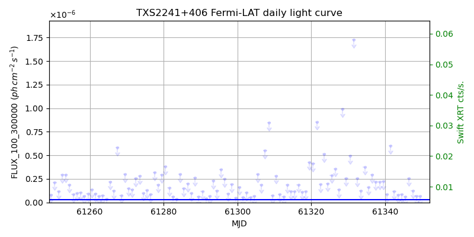
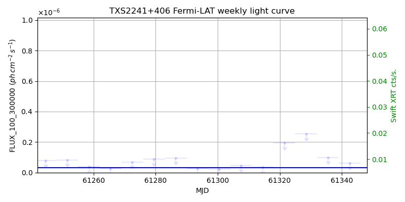
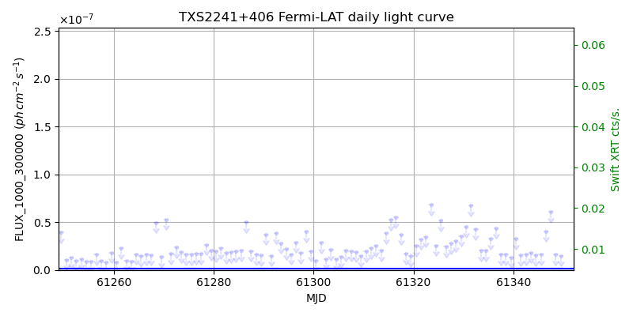
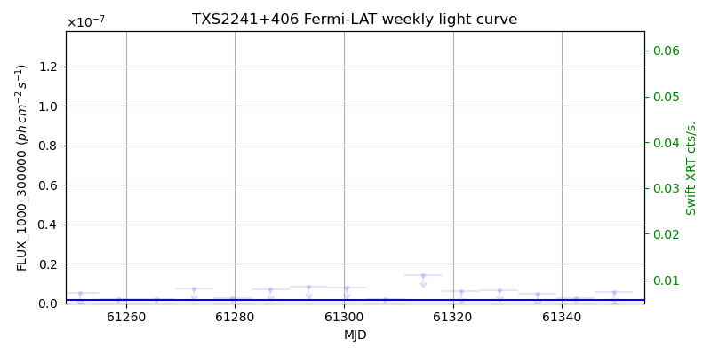

LAT Lightcurve site: https://fermi.gsfc.nasa.gov/ssc/data/access/lat/msl_lc/source/TXS_2241p406
Swift site: https://www.swift.psu.edu/monitoring/source.php?source=TXS2241+406
NED: Query
Time of last update of this page: UT: 2026-11-13 16:30 (MJD: 61357.688)
| Property | Value |
|---|---|
| R.A. | 22:44:12.72 |
| Dec. | 40:57:14.4 |
| z | 1.171 |
| 3FGL SpectrumType | PowerLaw |
| 3FGL PL Index | 2.29 |
| 3FGL Flux_100_300000 | 3.22e-08 1 / (s cm2) |
| 3FGL Flux_1000_300000 | 1.65e-09 1 / (s cm2) |
| 3FGL Flux >200 GeV | 1.78e-12 1 / (s cm2) |
| 3FGL Extrap. Crab >200 GeV | 0.01 |
| 3FGL Flux After EBL Absorption >200GeV | 1.20e-14 1 / (s cm2) |
| 3FGL EBL Crab Fraction >200GeV | 0.00 |

| MJD | dMJD | Flux | dFlux | Frac3FGL | FracCrab>200GeV | EBLFracCrab>200GeV |
|---|---|---|---|---|---|---|
| 61348.50 | 0.50 | 6.74e-08 | 0.00e+00 | 0.00 | 0.00 | 0.00 |
| 61349.50 | 0.50 | 6.48e-08 | 0.00e+00 | 0.00 | 0.00 | 0.00 |
| 61350.50 | 0.50 | 1.23e-07 | 0.00e+00 | 0.00 | 0.00 | 0.00 |
| 61351.50 | 0.50 | 6.99e-08 | 0.00e+00 | 0.00 | 0.00 | 0.00 |
| 61352.50 | 0.50 | 3.64e-08 | 0.00e+00 | 0.00 | 0.00 | 0.00 |

| MJD | dMJD | Flux | dFlux | Frac3FGL | FracCrab>200GeV | EBLFracCrab>200GeV |
|---|---|---|---|---|---|---|
| 61321.50 | 3.50 | 1.95e-07 | 0.00e+00 | 0.00 | 0.00 | 0.00 |
| 61328.50 | 3.50 | 2.54e-07 | 0.00e+00 | 0.00 | 0.00 | 0.00 |
| 61335.50 | 3.50 | 9.91e-08 | 0.00e+00 | 0.00 | 0.00 | 0.00 |
| 61342.50 | 3.50 | 6.29e-08 | 0.00e+00 | 0.00 | 0.00 | 0.00 |
| 61349.50 | 3.50 | 2.43e-08 | 0.00e+00 | 0.00 | 0.00 | 0.00 |

| MJD | dMJD | Flux | dFlux | Frac3FGL | FracCrab>200GeV | EBLFracCrab>200GeV |
|---|---|---|---|---|---|---|
| 61348.50 | 0.50 | 1.60e-08 | 0.00e+00 | 0.00 | 0.00 | 0.00 |
| 61349.50 | 0.50 | 1.48e-08 | 0.00e+00 | 0.00 | 0.00 | 0.00 |
| 61350.50 | 0.50 | -1.00e+00 | 0.00e+00 | 0.00 | 0.00 | 0.00 |
| 61351.50 | 0.50 | 1.46e-08 | 0.00e+00 | 0.00 | 0.00 | 0.00 |
| 61352.50 | 0.50 | 1.63e-08 | 0.00e+00 | 0.00 | 0.00 | 0.00 |

| MJD | dMJD | Flux | dFlux | Frac3FGL | FracCrab>200GeV | EBLFracCrab>200GeV |
|---|---|---|---|---|---|---|
| 61321.50 | 3.50 | 6.20e-09 | 0.00e+00 | 0.00 | 0.00 | 0.00 |
| 61328.50 | 3.50 | 6.83e-09 | 0.00e+00 | 0.00 | 0.00 | 0.00 |
| 61335.50 | 3.50 | 4.69e-09 | 0.00e+00 | 0.00 | 0.00 | 0.00 |
| 61342.50 | 3.50 | 2.59e-09 | 0.00e+00 | 0.00 | 0.00 | 0.00 |
| 61349.50 | 3.50 | 5.81e-09 | 0.00e+00 | 0.00 | 0.00 | 0.00 |
--------------------------------------------------------- Using user-supplied coords: 22:44:12.72 40:57:14.4 2000 --------------------------------------------------------- FLWO UT night of: 2026-11-14 Local Sid. @ Midnight: 03:09 Sunset (-15.0) (local, UT): 18:35 01:35 Sunrise (-15.0) (local, UT): 05:42 12:42 Moonrise (local, UT): Moonset (local, UT): 20:50 03:50 Moon phase: 0.22 --------------------------------------------------------- AzTime LSID UT Obj_el Obj_az Mn_el Mn_az Sep. --------------------------------------------------------- 18:35 21:44 01:35 74.5 48.3 20.1 218.2 85.3 19:05 22:14 02:05 78.7 31.5 16.0 223.7 85.1 19:35 22:44 02:35 80.6 1.4 11.6 228.6 84.9 20:05 23:14 03:05 78.9 330.4 6.9 233.2 84.7 20:35 23:44 03:35 74.9 312.7 2.0 237.3 84.5 21:05 00:14 04:05 69.8 304.1 -2.2 241.2 84.3 21:35 00:44 04:35 64.4 300.0 -9.0 244.8 84.1 22:05 01:14 05:05 58.8 298.2 -14.6 248.2 83.9 22:35 01:44 05:35 53.2 297.7 -20.4 251.4 83.7 23:05 02:14 06:05 47.5 298.0 -26.2 254.5 83.5 23:35 02:44 06:35 41.9 299.0 -32.1 257.5 83.2 00:05 03:14 07:05 36.3 300.3 -38.1 260.6 83.0 00:35 03:45 07:35 30.8 302.1 -44.2 263.8 82.7 01:05 04:15 08:05 25.5 304.2 -50.2 267.1 82.5 01:35 04:45 08:35 20.3 306.6 -56.3 270.9 82.2 02:05 05:15 09:05 15.2 309.3 -62.4 275.3 82.0 02:35 05:45 09:35 10.4 312.3 -68.4 281.1 81.7 03:05 06:15 10:05 5.9 315.6 -74.2 289.9 81.5 03:35 06:45 10:35 1.7 319.3 -79.6 306.2 81.3 04:05 07:15 11:05 -1.5 323.3 -83.2 343.5 81.0 04:35 07:45 11:35 -6.1 327.6 -82.1 35.1 80.8 05:05 08:15 12:05 -9.4 332.3 -77.4 61.2 80.5 05:35 08:45 12:35 -12.2 337.4 -71.8 73.4 80.3 05:42 08:52 12:42 -12.7 338.5 -70.5 75.2 80.3 --------------------------------------------------------- Dark hours >55 deg.: 1.59 srcstart (UT): 2026-11-14 03:50 srcend (UT): 2026-11-14 05:25